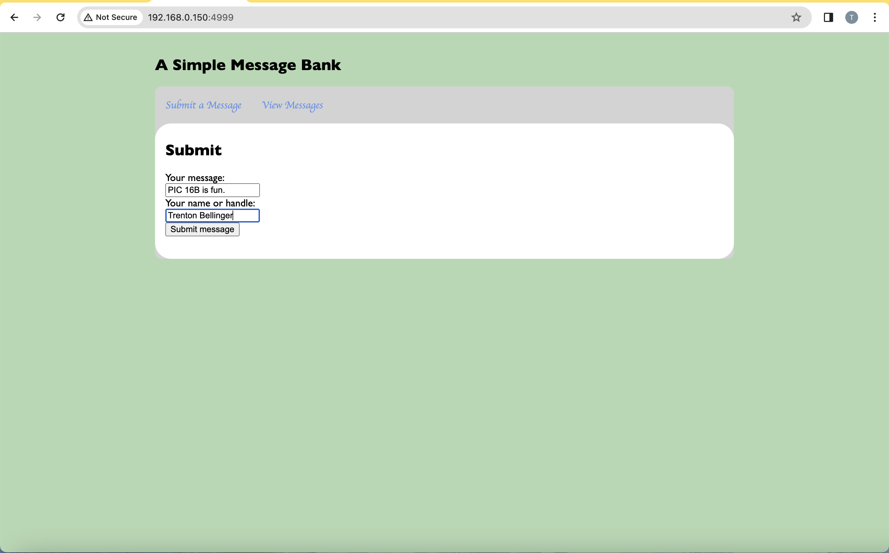
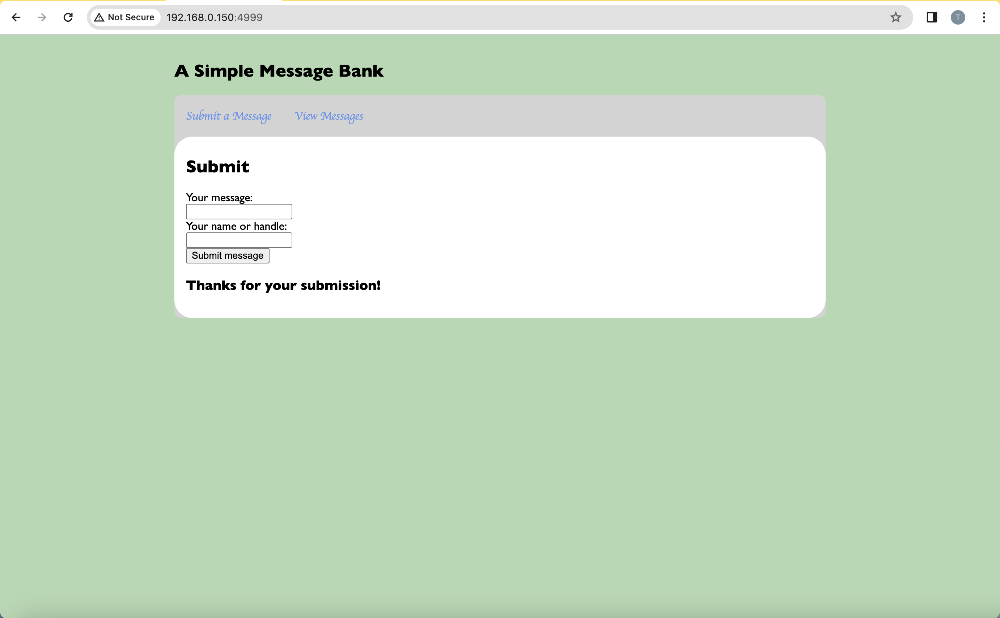

from flask import Flask, render_template, request, g
import sqlite3
app = Flask(__name__)This blog post will outline my completion of PIC 16B Homework 3. I will describe my creation of a Flask app that allows users to input a message, saves the message in a database, and can return the previous messages. I break the process into 4 simple steps.
Github Link:
https://github.com/trentbellinger/PIC16B-HW3
Blog Post Link:
https://trentbellinger.github.io/PIC-16B/posts/Homework3/HW3.html
Step 1: Creating the app.py File
The app.py Header
- The first thing that is needed in the python file for the app is an appropriate header that imports the necessary packages/functions and initializes the app. This header is shown below:
The get_message_db() Function:
- Then, we move on to the creation of the first function in the python file. This function will create a SQL database for the messages that are inputted in the website if none has been created already. If a SQL database already exists, it will simply return that database. The code for this function is shown below:
def get_message_db():
'''
Handles the creation of a SQL database for the messages that are presented
in the website.
'''
try:
return g.message_db
except:
# if a database is not present, we create one
g.message_db = sqlite3.connect("messages_db.db")
# if a messages does not exist, create table with columns for handle and text
cmd = 'CREATE TABLE IF NOT EXISTS messages (message TEXT, handle TEXT)'
cursor = g.message_db.cursor()
cursor.execute(cmd)
return g.message_dbThe insert_message() Function:
- We will now create a function that takes in a user’s input in the form of a request and inserts the user’s handle into the SQL database that is created with the get_message_db() function created above. The code for this function is shown below:
def insert_message(request):
'''
Extracts the message and handle from a request and inserts them into the messages
database.
Arguments:
request: a request that the user inputs to the webpage
Returns:
the message and handle from the request
'''
message = request.form["message"]
handle = request.form["handle"]
db = get_message_db()
cursor = db.cursor()
# insert the handle and message into the database
ins = f'INSERT INTO messages (message, handle) VALUES ("{message}", "{handle}")'
cursor.execute(ins)
# commit the changes and close the connection
db.commit()
db.close()The random_messages() Function:
- Now that we have a way to insert the user inputs into the database, we will create a function that allows us to extract random messages from the database.
- The function random_messages(), shown below, outputs a list of the handles and messages for the n random entries of the database that are selected. If the database has less than n entries, then all of the handles and messages will be returned.
def random_messages(n):
'''
Returns a collection of n random messages that have been previously inputted
into the app.
Arguments:
n (int): the number of random messages to return
Returns:
messages (list): contains the name and message for the n random messages
'''
# Get the database connection
db = get_message_db()
cursor = db.cursor()
# select the handle and message for n random entries in the messages table
cursor.execute(f"SELECT handle, message FROM messages ORDER BY RANDOM() LIMIT {n}")
# save the message (output[0]) and the handle (output[1]) in a list
messages = [[output[0], output[1]] for output in cursor.fetchall()]
# close the db connection
db.close()
return messagesThe render_submit_template() Function:
- We now have all the helper function for our website complete, so we can move on to creating functions to display certain pages in the website. OUr website will have two pages.
- The first page will be a page that allows a user to submit their handle and message. This function most have two cases: GET and POST.
- In the POST case, the function will insert the user’s inputted message into the database (this functionality is tied to the “Submit message” button in the website) and then render the submit.html file.
- In the GET case, the function will simply render the submit.html file.
- The creation of the submit.html file will be outlined later.
- The code for the first page of the app is shown below:
@app.route('/', methods = ['POST', 'GET'])
def render_submit_template():
'''Renders the submit.html file in the app, accounting for POST and GET requests.'''
if request.method == 'POST':
# for a POST request, we insert the message into the database
insert_message(request)
msg = "Thanks for your submission!"
# render submit.html with a thank you message
return render_template('submit.html', msg = msg)
else:
# for a GET request, simply render submit.html
return render_template('submit.html')The view_random_messages() Function:
- We now want to create a page that allows users to see past submissions on the website.
- This will be done by calling the random_messages() function created above and then rendering the view.html file with the outputtes messages.
- The creation of the view.html file will be outliner later.
- This code is shown below.
@app.route('/view')
def view_random_messages():
'''
Creates a /view page of the app that displays 4 random messages that have been
previously inputted along with the name/handle of the person who submitted them.
'''
# get 4 random messages
messages = random_messages(4)
# render view.html with the 4 random messages
return render_template('view.html', messages = messages)Allowing the App to be Run Locally:
- Finally, we need a place to run the app. The following function allows the app to be run on a local device by simply running the python file in the terminal.
if __name__ == '__main__':
'''
How to run the app. I had to use port=4999 for it to run on my
device (5000 was not working).
'''
app.run(host='0.0.0.0', port=4999, debug=True)- This concludes the creation of the app.py file. We will now move on the the creation of the html files, which are the display of the website.
Step 2: Creating the .html Files
- In order for the python code that we just wrote to transform into a website, we need to create displays for each of the pages for the website. This is done through the creation of 3 sepearet .html files, whose creation will be outlined below.
The base.html File:
- The first html file that we must write is called base.html, which will contain the header for each page of the website.
- The html code for this file is shown here. A breakdown of this code is given below the code.
#1: <!doctype html>
#2: <html>
#3: <link rel="stylesheet" href="{{ url_for('static', filename='style.css') }}">
#4: <h2>A Simple Message Bank</h2>
#5: <nav>
#6: <!-- <b>Navigation:</b> -->
#7: <ul>
#8: <li><a href="{{ url_for('render_submit_template') }}">Submit a Message</a></li>
#9: <li><a href="{{ url_for('view_random_messages')}}">View Messages</a></li>
#10: </ul>
#11: <section class="content">
#12: <header>
#13. {% block header %}{% endblock %}
#14. </header>
#15. {% block content %}{% endblock %}
#16. </section>
#17. </html>- Line 3: This line establishes the style of the website. The guidelines for the style are contained in the style.css file which we will go over later.
- Line 4: The header starts with a title: Simple Message Bank.
- Lines 5-10: These lines create a block that will show the urls to move to another page on the website.
- Line 8: This line creates a link called “Submit a Message” that calls the render_submit_template() function created in the app.py file.
- Line 9: This line creates a link called “View Messages” that calls the view_random_messages() function created in the app.py file.
- Lines 11-16: Create a block that will contain the information from the other html files.
- Line 13: This will contain the “header” block of the other html files.
- Line 15: This will cintain the “content” block of the other html files.
The submit.html File:
- We will now create the submit.html file, which creates a webpage where the user can submit their handle and message.
- The html code for this file is shown here. A breakdown of this code is given below the code.
#1. <!doctype html>
#2. <html>
#3. {% extends 'base.html' %}
#4. <body>
#5. {% block header %}
#6. <h2>Submit</h2>
#7. {% endblock %}
#8. {% block content %}
#9. <form action = "{{ url_for('render_submit_template') }}" method = "POST">
#10. Your message:<br>
#11. <input type = "text" name = "message" id = "message" /></br>
#12. Your name or handle:<br>
#13. <input type = "text" name = "handle" id = "handle" /></br>
#14. <input type = "submit" value = "Submit message" /><br>
#15. </form>
#16. <h3>{{ msg }}</h3>
#17. {% endblock %}
#18. </body>
#19. </html>- Line 3: Makes the header of this webpage the header that is outlined in the base.html file above.
- Lines 5-7: Fill in the “block header” portion of the base.html file.
- Line 6: Make “Submit” the title of this webpage block.
- Lines 8-17: Fill in the “block content” portion of the base.html file.
- Line 9: Specify that the function of this webpage is to run the render_submit_template() function in the app.py file with the POST method.
- Lines 10-11: Create a text box labeled “Your massage:” that allows a user to submit a message, binding their input to the object names “message”.
- Lines 12-13: Create a text box labeled “Your name or handle:” that allows a user to submit a their name or handle, binding their input to the object names “handle”.
- Line 14: Create a button labeles “Submit message” that a user presses to submit thier entry, running the render_submit_template() function, which adds the entry to the SQL database.
- Line 16: Option for an additional message to be outputted once the user submits their message.
The view.html File:
- We will now create the view.html file, which creates a webpage where the user can view 4 random previous entries to the website. This is the last html file that is needed for our website.
- The html code for this file is shown here. A breakdown of this code is given below the code.
#1. <!doctype html>
#2. <html>
#3. {% extends 'base.html' %}
#4. <body>
#5. {% block header %}
#6. <h2>Some Cool Messages</h2>
#7. {% endblock %}
#8. {% block content %}
#9. {% if messages %}
#10. <p>
#11. {% for message in messages %}
#12. <p>
#13. <br><strong>"{{message[1]}}"</strong></br>
#14. <i>-{{message[0]}}</i>
#15. </p>
#16. {% endfor %}
#17. </p>
#18. {% else %}
#19. <p>No messages available.</p>
#20. {% endif %}
#21. {% endblock %}
#22. </form>
#23. </body>
#24. </html>- Line 3: Makes the header of this webpage the header that is outlined in the base.html file above.
- Lines 5-7: Fill in the “block header” portion of the base.html file.
- Line 6: Make “Some Cool Messages” the title of this webpage block.
- Lines 8-21: Fill in the “block content” portion of the base.html file.
- Line 9: Create an if statement that only runs if a messages object is inputted.
- Line 11: Create a for loop that loops through the inputs of messages.
- Line 13: Put the message in quotes and make it bold.
- Line 14: Put the handle of the user under their quote in italics with a dash in front.
- Line 18: If there is no messages object inputted, display “No messages avaliable.”
Step 3: Creating the style.css File
- We will now customize the look of our webpage. This is done through the creation of a style.css file.
- This file is shown below. A breakdown of each block is also given below.
#html {
# font-family: "Gill Sans", sans-ser;
# background: rgba(0, 128, 0, 0.3);
# padding: 1rem;
#}
#body {
# max-width: 900px;
# margin: 0 auto;
#}
#a {
# color: CornflowerBlue;
# font-family: cursive;
# text-decoration: none;
#}
#nav {
# display: block;
# background: lightgray;
# padding: 0.25 0.25rem;
# border-radius: 10px;
#}
#nav ul {
# display: flex;
# list-style: none;
# margin: 0;
# padding: 0;
#}
#nav ul li a {
# display: block;
# padding: 1rem;
#}
#.content {
# padding: 0.5rem 1rem 1rem;
# background: white;
# border-radius: 25px;
#}
#.flash {
# text-align: left;
# margin: 5em 5em;
# padding: 5em;
#}- html {}: This block specifies the font that will be used throughout the webpage, the background color of the app, and the padding around the outside of the webpage.
- body {}: This block specified the maximum width and the margin of the main part of the webpage (where the text is).
- a {}: This block controls the font and color of the text that shows the links in the header of the webpage.
- nav {}: This creates a block that will be the main part of the app, with a specific color and padding.
- nav ul {}: This specifies the format of the elements that are found inside the block created in the nav block.
- nav ul li a {}: This creates another block within the nav block that will contain the user input/output of the webpage.
- .content {}: This controls the padding, background color, and border-radius of the nav ul li a block.
- .flash {}: This controls the text specifications inside the nav ul li a block.
Step 4: Running the App
- We now have all the functional parts of the app created. We wil move on to how to run the app.
Where to Place the Created Files:
- First, create a folder for the webpage on your device called hw3_flask, and put the app.py file in that folder.
- Inside the hw3_flask folder, create another folder called static and put the style.css file in that folder.
- Also inside the hw3_flask folder, create another folder called templates and put the base.html, submit.html, and view.html files in that folder.
How to Run the App:
- Go to the terminal and set the working directory to the hw3_flask folder. I did this by running:
cd /Users/trentbellinger/Desktop/PIC 16B/Homework/Homework 3/hw3_flask
- Then, run the following command terminal:
python app.py
- This will give you a line in the terminal output that says running on http://192.168.0.150:4999 (with different numbers).
- Copy and paste this link into your browser and interact with the website.
App Screenshots
- Upon running the app, this is the initial page that shows up. I inserted my full name and a message.

- After I clicked the Submit message button, this is what showed up.

- Now I clicked on the “View Messages” link, and this page was brought up.

- This is successful. These are four random messages/handles that I did during the testing of the app. The recent message and handle is also shown.